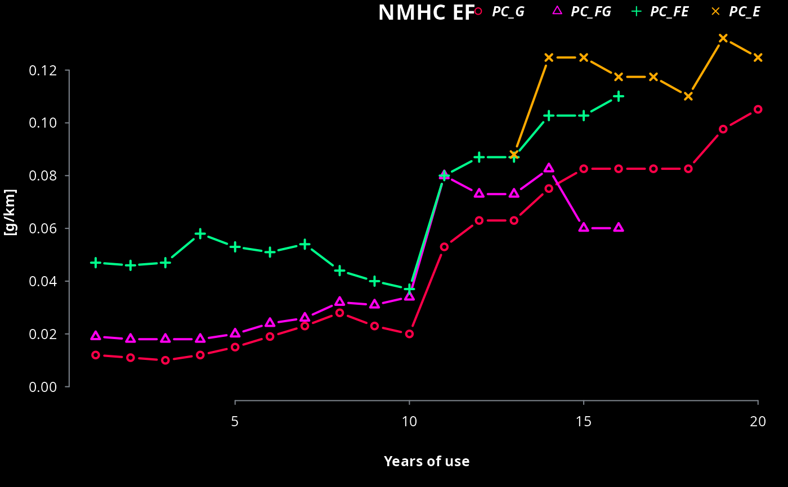

R/ef_cetesb.R
ef_cetesb.Rdef_cetesb returns a vector or data.frame of Brazilian emission factors.
ef_cetesb(
p,
veh,
year = 2017,
agemax = 40,
scale = "default",
sppm,
full = FALSE,
efinput,
verbose = FALSE,
csv
)Character;
Pollutants: "CO", "HC", "NMHC", "CH4", "NOx", "CO2", "RCHO" (aldehydes + formaldehyde), "ETOH", "PM", "N2O", "KML", "FC", "NO2", "NO", "NH3", "gD/KWH", "gCO2/KWH", "RCHO_0km" (aldehydes + formaldehyde), "PM25RES", "PM10RES", "CO_0km", "HC_0km", "NMHC_0km", "NOx_0km", "NO2_0km" ,"NO_0km", "RCHO_0km" and "ETOH_0km", "FS" (fuel sales) (g/km). If scale = "tunnel" is used, there is also "ALD" for aldehydes and "HCHO" for formaldehydes Evaporative emissions at average temperature ranges: "D_20_35", "S_20_35", "R_20_35", "D_10_25", "S_10_25", "R_10_25", "D_0_15", "S_0_15" and "R_0_15" where D means diurnal (g/day), S hot/warm soak (g/trip) and R hot/warm running losses (g/trip). THe deteriorated emission factors are calculated inside this function.
Character; Vehicle categories: "PC_G", "PC_FG", "PC_FE", "PC_E", "LCV_G", "LCV_FG", "LCV_FE", "LCV_E", "LCV_D", "TRUCKS_SL", "TRUCKS_L", "TRUCKS_M", "TRUCKS_SH", "TRUCKS_H", "BUS_URBAN", "BUS_MICRO", "BUS_COACH", "BUS_ARTIC", "MC_150_G", "MC_150_500_G", "MC_500_G", "MC_150_FG", "MC_150_500_FG", "MC_500_FG", "MC_150_FE", "MC_150_500_FE", "MC_500_FE", "CICLOMOTOR", "GNV"
Numeric; Filter the emission factor to start from a specific base year. If project is 'constant' values above 2017 and below 1980 will be repeated
Integer; age of oldest vehicles for that category
Character; values "default","tunnel" o "tunnel2018". If "tunnel", emission factors are scaled to represent EF measurements in tunnels in Sao Paulo
Numeric, sulfur (sulphur) in ppm in fuel.
Logical; To return a data.frame instead or a vector adding Age, Year, Brazilian emissions standards and its euro equivalents.
data.frame with efinput structure of sysdata cetesb. Allow apply deterioration for future emission factors
Logical; To show more information
String with the path to download the ef in a .csv file. For instance, ef.csv
A vector of Emission Factor or a data.frame
new emission factors ar projects as the lates available,
The new convention for vehicles names are translated from CETESB report:
| veh | description |
| PC_G | Passenger Car Gasohol (Gasoline + 27perc of anhydrous ethanol) |
| PC_E | Passenger Car Ethanol (hydrous ethanol) |
| PC_FG | Passenger Car Flex Gasohol (Gasoline + 27perc of anhydrous ethanol) |
| PC_FE | Passenger Car Flex Ethanol (hydrous ethanol) |
| LCV_G | Light Commercial Vehicle Gasohol (Gasoline + 27perc of anhydrous ethanol) |
| LCV_E | Light Commercial Vehicle Ethanol (hydrous ethanol) |
| LCV_FG | Light Commercial Vehicle Flex Gasohol (Gasoline + 27perc of anhydrous ethanol) |
| LCV_FE | Light Commercial Vehicle Flex Ethanol (hydrous ethanol) |
| LCV_D | Light Commercial Vehicle Diesel (5perc bio-diesel) |
| TRUCKS_SL_D | Trucks Semi Light Diesel (5perc bio-diesel) |
| TRUCKS_L_D | Trucks Light Diesel (5perc bio-diesel) |
| TRUCKS_M_D | Trucks Medium Diesel (5perc bio-diesel) |
| TRUCKS_SH_D | Trucks Semi Heavy Diesel (5perc bio-diesel) |
| TRUCKS_H_D | Trucks Heavy Diesel (5perc bio-diesel) |
| BUS_URBAN_D | Urban Bus Diesel (5perc bio-diesel) |
| BUS_MICRO_D | Micro Urban Bus Diesel (5perc bio-diesel) |
| BUS_COACH_D | Coach (inter-state) Bus Diesel (5perc bio-diesel) |
| BUS_ARTIC_D | Articulated Urban Bus Diesel (5perc bio-diesel) |
| MC_150_G | Motorcycle engine less than 150cc Gasohol (Gasoline + 27perc of anhydrous ethanol) |
| MC_150_500_G | Motorcycle engine 150-500cc Gasohol (Gasoline + 27perc of anhydrous ethanol) |
| MC_500_G | Motorcycle greater than 500cc Gasohol (Gasoline + 27perc of anhydrous ethanol) |
| MC_150_FG | Flex Motorcycle engine less than 150cc Gasohol (Gasoline + 27perc of anhydrous ethanol) |
| MC_150_500_FG | Flex Motorcycle engine 150-500cc Gasohol (Gasoline + 27perc of anhydrous ethanol) |
| MC_500_FG | Flex Motorcycle greater than 500cc Gasohol (Gasoline + 27perc of anhydrous ethanol) |
| MC_150_FE | Flex Motorcycle engine less than 150cc Ethanol (hydrous ethanol) |
| MC_150_500_FE | Flex Motorcycle engine 150-500cc Ethanol (hydrous ethanol) |
| MC_500_FE | Flex Motorcycle greater than 500cc Ethanol (hydrous ethanol) |
| PC_ELEC | Passenger Car Electric |
| LCV_ELEC | Light Commercial Vehicle Electric |
The percentage varies of biofuels varies by law.
This emission factors are not exactly the same as the report of CETESB.
1) In this emission factors, there is also NO and NO2 based on split by published in the EMEP/EEA air pollutant emission inventory guidebook.
2) Also, the emission factors were extended till 50 years of use, repeating the oldest value.
3) CNG emission factors were expanded to other pollutants by comparison of US.EPA-AP42 emission factor: Section 1.4 Natural Gas Combustion.
In the previous versions I used the letter 'd' for deteriorated. I removed the letter 'd' internally to not break older code.
If by mistake, the user inputs one of veh names from the old convention, they are internally changed to the new convention: "SLT", "LT", "MT", "SHT","HT", "UB", "SUB", "COACH", "ARTIC", "M_G_150", "M_G_150_500", "M_G_500", "M_FG_150", "M_FG_150_500", "M_FG_500", "M_FE_150", "M_FE_150_500","M_FE_500", PC_ELEC, LCV_ELEC, TRUCKS_ELEC, BUS_ELEC, MC_150_ELEC, MC_150_500_ELEC, MC_500_ELEC
If pollutant is "SO2", it needs sppm. It is designed when veh has length 1, if it has length 2 or more, it will show a warning
Emission factor for vehicles older than the reported by CETESB were filled with las highest EF
Range EF from PC and LCV otto: 2018 - 1982. EF for 1981 and older as moving average.
Range LCV diesel : 2018 - 2006. EF for 2005 and older as moving average.
Range Trucks and Buse: 2018 - 1998. EF for 1997 and older as moving average.
Range MC Gasoline: 2018 - 2003. EF for 2002 and older as moving average.
Range MC Flex 150-500cc and >500cc: 2018 - 2012. EF for 2011 and older as moving average.
Currently, 2020, there are not any system for recovery of fuel vapors in Brazil. Hence, the FS takes into account the vapour that comes from the fuel tank inside the car and released into the atmosphere when injecting new fuel. There are discussions about increasing implementing stage I and II and/or ORVR these days. The ef FS is calculated by transforming g FC/km into (L/KM)*g/L with g/L 1.14 fgor gasoline and 0.37 for ethanol (CETESB, 2016). The density considered is 0.75425 for gasoline and 0.809 for ethanol (t/m^3)
CETESB emission factors did not cover evaporative emissions from motorcycles, which occur. Therefore, in the absence of better data, it was assumed the same ratio from passenger cars.
Li, Lan, et al. "Exhaust and evaporative emissions from motorcycles fueled with ethanol gasoline blends." Science of the Total Environment 502 (2015): 627-631.
If scale is used with tunnel, the references are:
Pérez-Martinez, P. J., Miranda, R. M., Nogueira, T., Guardani, M. L., Fornaro, A., Ynoue, R., and Andrade, M. F. (2014). Emission factors of air pollutants from vehicles measured inside road tunnels in Sao Paulo: case study comparison. International Journal of Environmental Science and Technology, 11(8), 2155-2168.
Nogueira, T., de Souza, K. F., Fornaro, A., de Fatima Andrade, M., and de Carvalho, L. R. F. (2015). On-road emissions of carbonyls from vehicles powered by biofuel blends in traffic tunnels in the Metropolitan Area of Sao Paulo, Brazil. Atmospheric Environment, 108, 88-97.
Nogueira, T., et al (2021). In preparation (for tunnel 2018)
Emission factors for resuspension applies only with top-down approach as a experimental feature. Units are g/(streets*veh)/day. These values were derived form a bottom-up resuspension emissions from metropolitan area of Sao Paulo 2018, assuming 50000 streets
NH3 from EEA Tier 2
Emissoes Veiculares no Estado de Sao Paulo 2016. Technical Report. url: https://cetesb.sp.gov.br/veicular/relatorios-e-publicacoes/.
{
a <- ef_cetesb(p = "CO", veh = "PC_G")
a <- ef_cetesb(p = "NOx", veh = "TRUCKS_M_D")
a <- ef_cetesb("R_10_25", "PC_G")
a <- ef_cetesb("CO", c("PC_G", "PC_FE"))
ef_cetesb(p = "CO", veh = "PC_G", year = 1970, agemax = 40)
ef_cetesb(p = "CO", veh = "TRUCKS_L_D", year = 2018)
ef_cetesb(p = "CO", veh = "SLT", year = 2018) # olds names
a <- ef_cetesb(p = "NMHC", veh = c("PC_G", "PC_FG", "PC_FE", "PC_E"), year = 2018, agemax = 20)
colplot(a, main = "NMHC EF", ylab = "[g/km]", xlab = "Years of use")
ef_cetesb(p = "PM25RES", veh = "PC_ELEC", year = 1970, agemax = 40)
ef_cetesb(p = "PM25RES", veh = "BUS_ELEC", year = 1970, agemax = 40)
}
#> I guess you wanted this:
#> TRUCKS_SL_D

#> Units: [g/km]
#> [1] 0.3074246 0.3074246 0.3074246 0.3074246 0.3074246 0.3074246 0.3074246
#> [8] 0.3074246 0.3074246 0.3074246 0.3074246 0.3074246 0.3074246 0.3074246
#> [15] 0.3074246 0.3074246 0.3074246 0.3074246 0.3074246 0.3074246 0.3074246
#> [22] 0.3074246 0.3074246 0.3074246 0.3074246 0.3074246 0.3074246 0.3074246
#> [29] 0.3074246 0.3074246 0.3074246 0.3074246 0.3074246 0.3074246 0.3074246
#> [36] 0.3074246 0.3074246 0.3074246 0.3074246 0.3074246